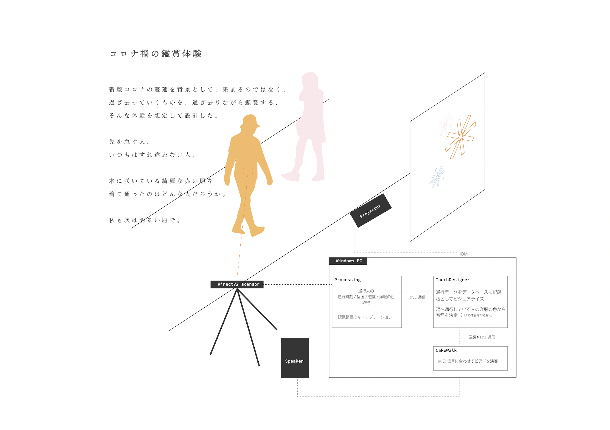
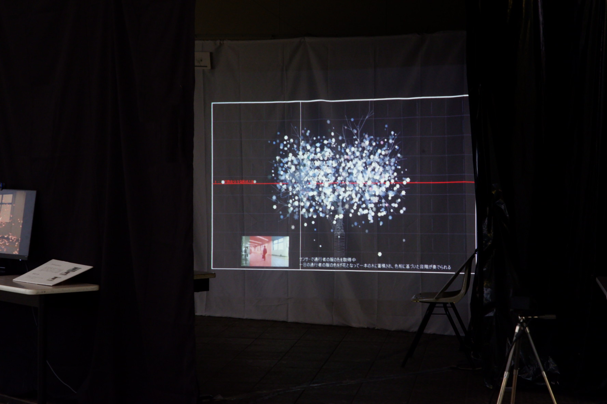

Haruwo "Matou"

How does the season of spring influence us ? 💐
新学期・新生活が始まる4月。
駅を利用する人々がまとう服の色を集めることで、無意識的に広がっている春の気配を映像として映し出す。
This is an installation that visualizes real-time pedestrian data of Canal Station as cherry blossoms, further converting it into music.
駅の通路に隣接したギャラリーにて、Kinectセンサーを用いて人流を記録。その際、同時にカメラから洋服の色を取得し、人が通路を通るたびにその人の色で桜が咲く仕組みとした。
桜が咲く際は色相から決定された音階によるピアノが鳴り、一定時間になると記録した桜が散り、音階が一続きの旋律へと変換される。
In a gallery adjacent to the station passageway, we recorded the flow of people using a Kinect sensor. At the same time, we captured the colors of people's clothes using the camera. We designed a system where cherry blossoms bloom with the colors of the clothes each time a person passes through the corridor. When the cherry blossoms bloom, a piano plays notes determined by the hue of the colors. After a certain period, the recorded cherry blossoms scatter, and the musical notes are converted into a continuous melody.
process of data conversion 🎨

data flow

made with TouchDesigner / Kinect / Processing / CakeWalk /
🖥️